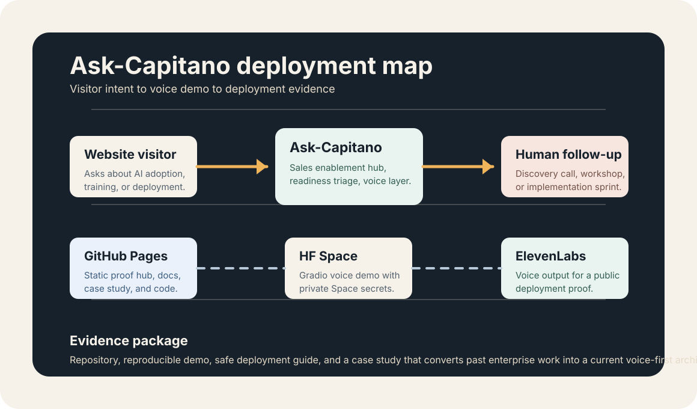

Deployment thinking
Every demo is framed as a customer problem, solution architecture, deployment path, and measurable outcome hypothesis.
I help European teams move from AI curiosity to usable workflows: readiness audits, implementation sprints, and multilingual training grounded in enterprise delivery experience.

A small public package is more useful than a hidden strategy deck. The goal is to show judgment, architecture, and shipping discipline in one place.
Every demo is framed as a customer problem, solution architecture, deployment path, and measurable outcome hypothesis.
The Hugging Face Space runs a free, open neural voice (English, French, Spanish) behind a website assistant — premium voices optional — and keeps API keys out of public code.
Ask-Capitano turns a past sales enablement hub into a current voice-first architecture without exposing confidential material.
Three services only for the first public version. Simple enough to understand, specific enough to sell.
From sales enablement hub to voice-first deployment architecture: a case study showing how fragmented knowledge, product material, training content, and market intelligence can become a live assistant layer.
visitor intent -> voice capture -> readiness triage -> source-grounded answer -> human follow-up -> measurable workflow outcome